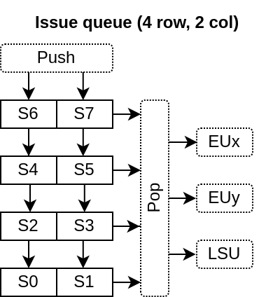
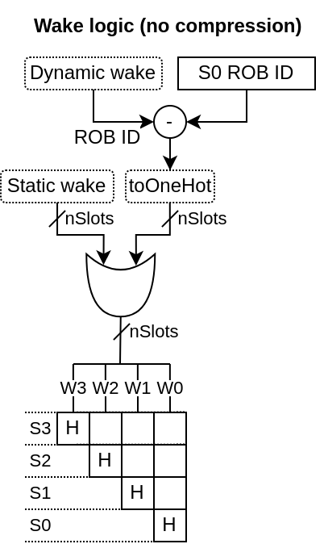
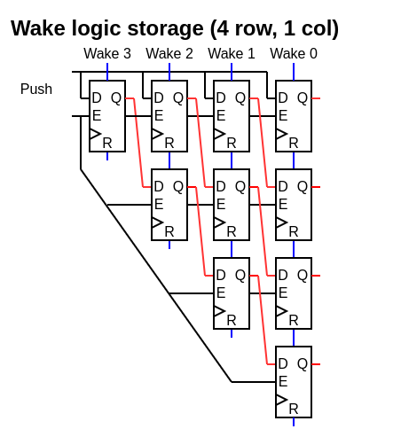
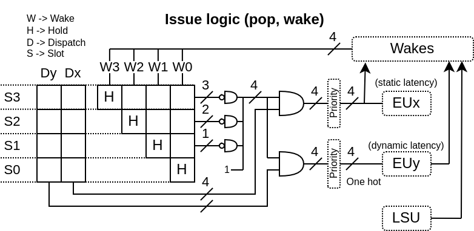

Dispatch / Issue¶
Here is a few specific points about the current implementation :
Unified design : Mostly to save area / having the most usage of each entries
2D queue : The entries arranged in C=decodeCount columns L=slotCount/decodeCount rows
Row push : When something is pushed in the queue, a whole row is “consumed”, even if the row isn’t fully used
No compression : There is no compression for empty rows. The while queue is shifted by one row on each push. It allows a better inferation of the matrix FF and a smaller/faster ROB ID wake logic.
Matrix based : The storage of which instruction depend on what is done as a half matrix
Older first : If multiple instruction can be dispatched at once on a given execution unit, the older one is selected
Wake by ROB ID : For dynamic wakes, the ROB ID is used as identifier (not the physical register file ID)
So, overall, a 32 slots queue seems a limite to not go beyond to preserve the timings. Also, with the current design, the area occupancy of the queue doesn’t seems to be a big deal compared to the CPU as a whole.
Here are a few illustrations :
   